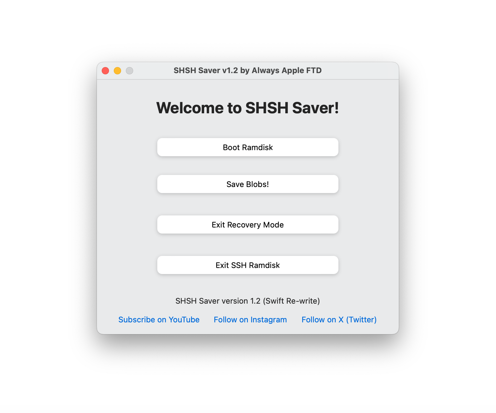

Presenting, SHSH Saver!
This a free utility for saving the SHSH Blobs on A9 to A11 devices.
This includes the iPhone 6s to X. You can see the full list in the Supported Devices section.

Supported devices
iPhone 6s
iPhone SE (1st generation)
iPhone 7
iPhone 7 Plus
iPhone 8
iPhone 8 Plus
iPhone X
iPad Pro 12.9-inch (2015)
iPad Pro 9.7-inch (2016)
iPad Pro 10.5-inch 1st generation
iPod touch 7th generation
iPad 5th generation
iPad 6th generation
iPad 7th generation
NOTE: The tool does not support any devices that aren't checkm8-compatible.
The method that is used in this software does not support any non-checkm8 devices.
How to download SHSH Saver
Open the link below to download the latest version.
Once you open the site, click on the blue download button to download.
Download SHSH Saver v1.0
NOTE: If you see the message that the app cannot be opened because it's
from an unidentified developer, then just Right-click on the app file and select open.
This will allow you to open the bypass the unidentified developer message and open the app.
If the app freezes the first time you open it,
then just right-click on the SHSH Saver icon in the dock and select Force Quit.
This will quit the app. You can reopen it and it shouldn't freeze this time.
How to use SHSH Saver
[1] Open up the app that you downloaded from here.
If you don't see the app show up after 10 seconds, then you can just click on the SHSH Saver icon in your Mac's dock to get it to show up.
[2] Enter DFU Mode on your device. There are various ways of doing this, depending on your device.
I would recommend looking up "How to Enter DFU Mode on " and then your device model.
Example might be "How to Enter DFU Mode on iPhone 7 Plus".
[3] Click on the "Boot Ramdisk" button.
This boots the pre-created Ramdisk on your device to enable SSH access.
NOTE: You should see the Apple logo then some verbose text on the screen.
If the device does anything different such as going straight into Recovery mode,
not showing the text, or not booting up at all, then please contact me with your issue and I can try to help you.
[4] Click on the "Save Blobs" button. This will save the onboard blobs off of your device.
The tool will prompt you to save the blobs in a specific location on your computer.
I would recommend doing this, because if you choose not to,
because then you will have to go all the way into the app's resources folder to access then again.
Hope you enjoy using my software!
Need help?
I'm here to help if you need it.
I try my best to make SHSH Saver user-friendly and fix any bugs
but feel free to report any problems to me.
Contact Always Apple FTD
Website made by Always Apple FTD. Please do not copy any part of this website.